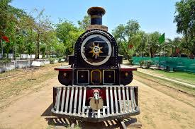

F-734 Locomotive
.jpeg)
F-734

The F-734 is the first locomotive to ever be made entirely in India. The loco marked a significant turning point in the history of the remarkable Indian Railways.
In 1895, the Ajmer Workshop of North Western Railway created history. They built the locomotive known as the F-734, which was the first indigenously made locomotive in India. The F-734 was employed on the Rajputana Malwa Railway, a 1,000 mm train line that connected Delhi with Ajmer and Ajmer with Indore and Ahmedabad. The Bombay Baroda & Central India Railway then took over the locomotive, where it provided passenger as well as cargo traffic from Delhi to Indore and up to Ahmedabad.
Specifications

This locomotive has a unique design. It has an American-style cowcatcher up front, which is a sturdy metal frame that helps clear the track of obstructions as the train goes forward, and weighs 38 tonnes. It was the first locomotive that was constructed entirely from scratch. Its design was influenced by the F class engines, which were produced in 1875 by Dubbs and Company in Glasgow, United Kingdom. It barely weighed 19 tonnes when it was in working order. The six-wheeled tender, a unique railcar storing fuel (wood, coal, oil, and water), added 13 tonnes to the weight.
Other Details

The F-734, built in 1895 by the Ajmer Workshop of the North Western Railway, was one of the driving forces behind the launch of India’s locomotive industry for the future. It served the nation for 63 long years. However, as all good things must come to an end, the locomotive was retired from service in 1958. The locomotive now stands in all its prime and glory at the National Rail Museum in New Delhi after being restored. A Glimpse into the 165 Glorious Years of Indian Railways. In 1895, First Locomotive, an F Class 0-6-0 MG Loco, built in Ajmer for the Rajputana Malwa Railway(F-734). This is now preserved at National Rail Museum.